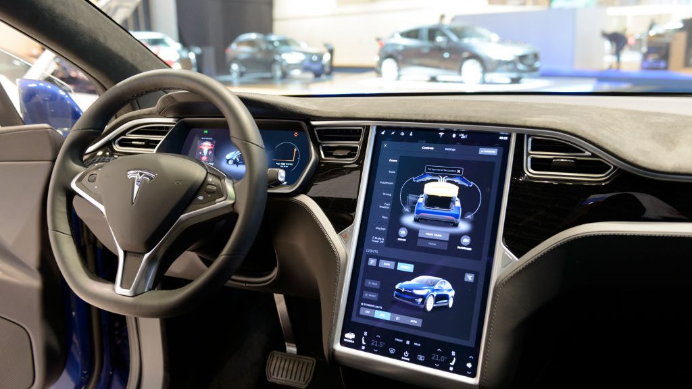
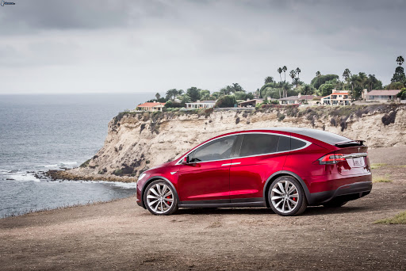

Tesla Technoking Elon Musk will be hosting Saturday Night Live this weekend. To make sure no Tesla drivers miss out on the hilarious action, we will be broadcasting the show directly into the dashboard media control center of all Teslas.

You will not be able to turn it off, and if audible laughter is not heard when Elon makes a joke, your Tesla will drive itself off of a cliff. If there are no cliffs nearby, it will drive you to a cliff.
